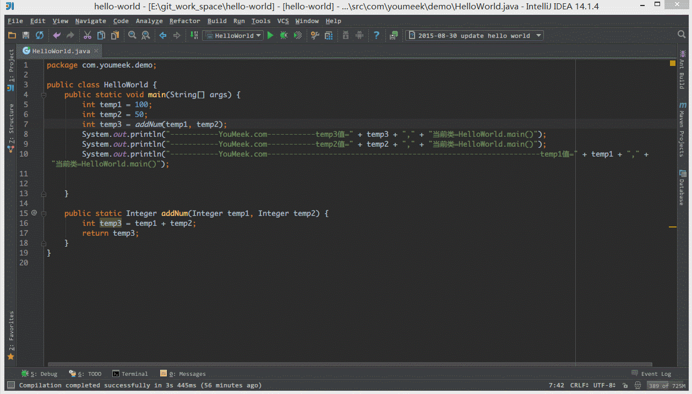
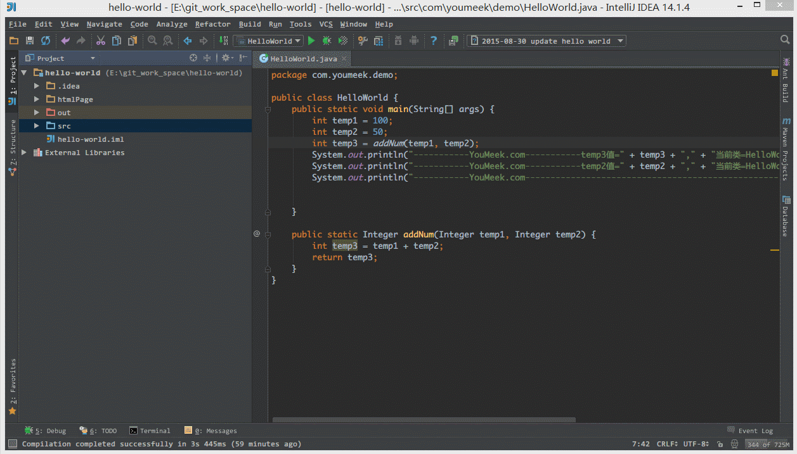
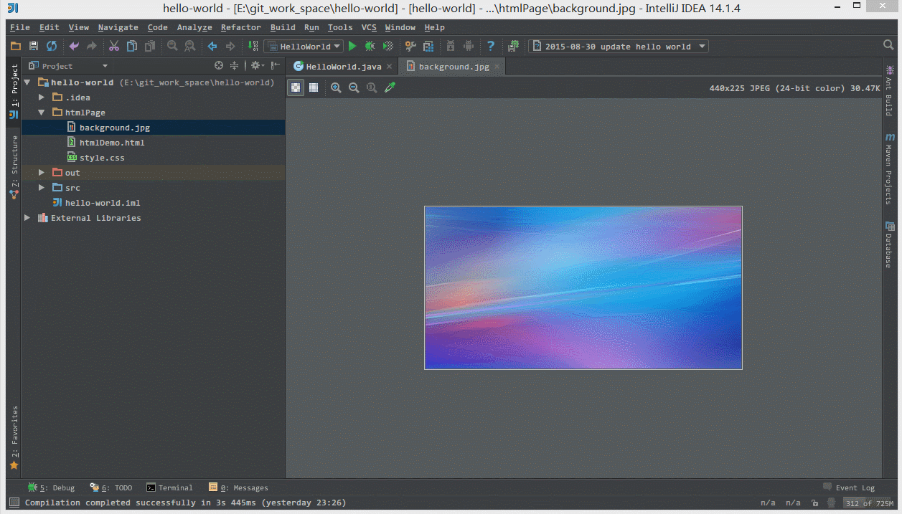
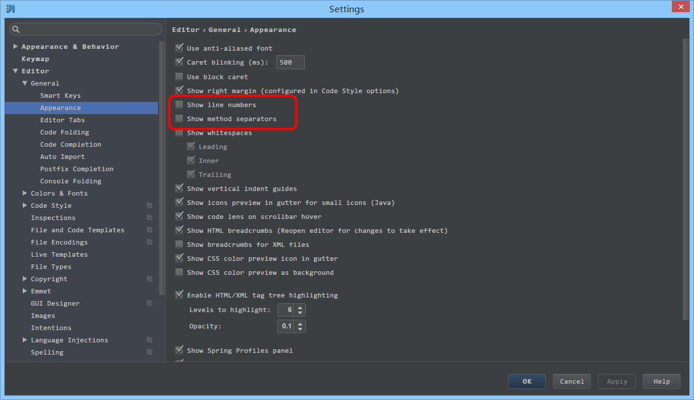

30 IntelliJ IDEA 常用设置讲解
说明
IntelliJ IDEA 有很多人性化的设置我们必须单独拿出来讲解，也因为这些人性化的设置让我们这些 IntelliJ IDEA 死忠粉更加死心塌地使用它和分享它。
常用设置

图片 30.1 常用设置
- 如上图 Gif 所示，当我们设置了组件窗口的
Pinned Mode属性之后，在切换到其他组件窗口的时候，已设置该属性的窗口不会自动隐藏。

图片 30.2 常用设置
- 如上图 Gif 所示，我们可以对某些文件进行添加到收藏夹，然后在收藏夹组件窗口中可以查看到我们收藏的文件。

图片 30.3 常用设置
- 如上图 Gif 所示，我们可以通过
Alt + F1+1快捷键来定位当前文件所在 Project 组件窗口中的位置。

图片 30.4 常用设置
- 如上图 Gif 所示，我们可以勾选此设置后，增加
Ctrl + 鼠标滚轮快捷键来控制代码字体大小显示。

图片 30.5 常用设置
- 如上图 Gif 所示，我们可以勾选此设置后，增加
Ctrl + 鼠标滚轮快捷键来控制图片的大小显示。

图片 30.6 常用设置
- 如上图红圈所示，默认 IntelliJ IDEA 是没有勾选
Show line numbers显示行数的，但是我建议一般这个要勾选上。- 如上图红圈所示，默认 IntelliJ IDEA 是没有勾选
Show method separators显示方法线的，这种线有助于我们区分开方法，所以也是建议勾选上的。

图片 30.7 常用设置
- 如上图 Gif 所示，我们选中要被折叠的代码按
Ctrl + Alt + T快捷键，选择自定义折叠代码区域功能。